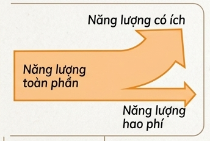
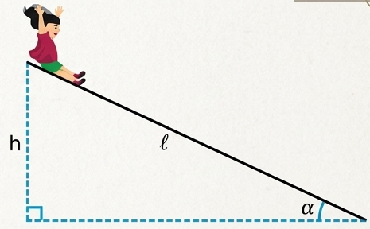
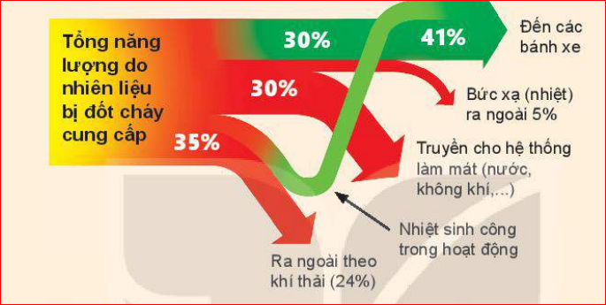

Đập nước của nhà máy thuỷ điện
Chúng ta đã biết khi năng lượng được chuyển từ dạng này sang dạng khác, từ vật này sang vật khác, thì luôn có một phần bị hao phí.

Hình 27.1. Sơ đồ năng lượng toàn phần, có ích và hao phí
Trong các động cơ nhiệt thông thường có khoảng từ 60% đến 70% năng lượng bị hao phí, trong các động cơ điện năng lượng hao phí thấp hơn, chỉ vào khoảng 10%, nhưng trong các pin mặt trời thì ngược lại, chỉ có khoảng 10% năng lượng của ánh sáng mặt trời được chuyển hoá thành điện năng, còn lại là năng lượng hao phí.
1. Trong thể thao:
- Năng lượng có ích: Là phần cơ năng (động năng, thế năng) giúp cơ thể vận động, di chuyển, thực hiện các động tác thể thao.
- Năng lượng hao phí: Là phần nhiệt năng cơ thể toả ra môi trường xung quanh, làm cơ thể nóng lên và đổ mồ hôi.
2. Trong thời tiết lạnh:
- Nhiệt năng mà cơ thể toả ra không được xem là năng lượng có ích (xét về mặt cơ học của việc tập luyện). Vì mục đích chính của việc chơi thể thao là chuyển hoá năng lượng sinh học thành cơ năng để vận động. Dù nhiệt lượng đó giúp sưởi ấm cơ thể trong thời tiết lạnh, nhưng đối với "mục đích vận động", nó vẫn là phần năng lượng bị hao phí.
Để đánh giá tỉ lệ giữa năng lượng có ích và năng lượng toàn phần, người ta dùng khái niệm hiệu suất.
Hoặc:
Với \( \mathcal{P}_{ci} \) là công suất có ích, \( \mathcal{P}_{tp} \) là công suất toàn phần.
Từ công thức tính hiệu suất chung ở trên người ta có thể viết công thức tính hiệu suất cho từng trường hợp cụ thể. Ví dụ, hiệu suất của động cơ nhiệt được viết dưới dạng:
Trong đó, \(A\) là công cơ học mà động cơ thực hiện được, \(Q\) là nhiệt lượng mà động cơ nhận được từ nhiên liệu bị đốt cháy.
Bảng 27.1. Hiệu suất của một số thiết bị điện
| Thiết bị | Năng lượng đầu vào | Năng lượng đầu ra có ích | Hiệu suất |
|---|---|---|---|
| Máy phát điện | Điện năng | Cơ năng | 96% |
| Tuabin nước | Cơ năng | Cơ năng | 90% |
| Máy hơi nước | Nhiệt năng | Cơ năng | 15% |
| Động cơ xăng | Hoá năng | Cơ năng | 35% |
| Tuabin hơi nước | Nhiệt năng | Cơ năng | 28% |
| Động cơ điện | Điện năng | Cơ năng | 96% |
| Đèn dây tóc | Điện năng | Quang năng | 7% |
| Đèn LED | Điện năng | Quang năng | 95% |
| Bếp điện | Điện năng | Nhiệt năng | 90% |
Câu 1:
- Động cơ ô tô: a) Hoá năng chuyển hoá thành Cơ năng và Nhiệt năng. b) Có ích: Cơ năng; Hao phí: Nhiệt năng.
- Quạt điện: a) Điện năng chuyển hoá thành Cơ năng và Nhiệt năng. b) Có ích: Cơ năng; Hao phí: Nhiệt năng.
Câu 2:
a) Acquy nạp điện: Điện năng (vào) -> Hoá năng (có ích) + Nhiệt năng (hao phí).
b) Acquy phóng điện: Hoá năng (vào) -> Điện năng (có ích) + Nhiệt năng (hao phí).
c) Kéo ròng rọc: Công kéo (vào) -> Thế năng của vật (công có ích) + Công ma sát toả nhiệt (hao phí).
d) Bếp từ: Điện năng (vào) -> Nhiệt năng đun nóng nồi/nước (có ích) + Nhiệt năng toả ra môi trường xung quanh (hao phí).
Một em bé nặng 20 kg chơi cầu trượt từ trạng thái đứng yên ở đỉnh cầu trượt dài 4 m, nghiêng góc \( 40^\circ \) so với phương nằm ngang (Hình 27.2). Khi đến chân cầu trượt, tốc độ của em bé này là 3,2 m/s. Lấy gia tốc trọng trường là \( 10 \, m/s^2 \).
a) Tính độ lớn lực ma sát tác dụng vào em bé này.
b) Tính hiệu suất của quá trình chuyển thế năng thành động năng của em bé này.

Giải:
a) Độ lớn lực ma sát
Độ cao của đỉnh cầu trượt so với mặt đất: \( h = \ell \sin\alpha = 4 \sin 40^\circ \approx 2,57 \, m \)
Do có ma sát nên khi trượt, một phần thế năng của em bé được chuyển hoá thành động năng, một phần thắng công cản \( A \) của lực ma sát:
\( m.g.h = \frac{m.v^2}{2} + A \Rightarrow A = m.g.h - \frac{m.v^2}{2} \approx 411,6 \, J \)
Độ lớn công cản của lực ma sát: \( A = F.\ell \)
Ta có độ lớn lực ma sát: \( F = \frac{A}{\ell} = \frac{411,6}{4} \approx 102,9 \, N \).
b) Hiệu suất
Năng lượng toàn phần bằng thế năng của em bé ở đỉnh cầu trượt: \( W_{tp} = m.g.h = 514 \, J \)
Năng lượng hao phí bằng độ lớn công của lực ma sát nên năng lượng có ích là: \( W_{ci} = W_{tp} - A = 514 - 411,6 = 102,4 \, J \) (cũng chính là động năng lúc chạm đất \( \frac{mv^2}{2} \)).
Hiệu suất của quá trình biến đổi thế năng thành động năng:
\( H = \frac{W_{ci}}{W_{tp}} . 100\% = \frac{102,4}{514} . 100\% \approx 20\% \).

Câu 1: Theo sơ đồ, tổng năng lượng đầu vào là 100%. Năng lượng có ích truyền đến các bánh xe chỉ chiếm 30% (hoặc 41% tuỳ sơ đồ cụ thể, theo hình minh hoạ phần trăm bị chia rẽ). Hao phí bao gồm: Khí thải (24%), Bức xạ nhiệt ra ngoài (5%), Truyền cho hệ thống làm mát...
Câu 2: Tuy hiệu suất thấp nhưng người ta vẫn khuyến khích xây dựng vì năng lượng mặt trời là nguồn năng lượng tái tạo, miễn phí, vô tận. Hơn nữa, nó không phát thải khí nhà kính hay ô nhiễm môi trường như nhà máy nhiệt điện (đốt than, khí).
Câu 3:
- V = 60 lít = \(0,06 \, m^3\). Khối lượng xăng: \(m = D.V = 700 \times 0,06 = 42 \, kg\).
- Nhiệt lượng toả ra (Năng lượng toàn phần): \(Q = m.q = 42 \times 46.10^6 = 1932.10^6 \, J\).
- Công có ích động cơ sinh ra: \(A_{ci} = H \times Q = 0,25 \times 1932.10^6 = 483.10^6 \, J\).
- Vận tốc: \(v = 54 \, km/h = 15 \, m/s\). Công suất: \(\mathcal{P} = 45 \, kW = 45000 \, W\).
- Thời gian xe chạy: \(t = \frac{A_{ci}}{\mathcal{P}} = \frac{483.10^6}{45000} \approx 10733,3 \, s\).
- Quãng đường đi được: \(S = v.t = 15 \times 10733,3 = 161000 \, m = 161 \, km\).
Hiệu suất luôn nhỏ hơn hoặc bằng 100% (\(H \le 100\%\)). Không có một máy móc nào hoạt động mà không có năng lượng hao phí (Không có động cơ vĩnh cửu loại 1).
Bài 1: Một cần cẩu nâng một vật khối lượng 500 kg lên cao 10 m trong thời gian 20 giây. Công suất tiêu thụ điện của động cơ cần cẩu là 3000 W. Lấy \( g = 10 \, m/s^2 \). Tính hiệu suất của cần cẩu.
Giải:
Công có ích để nâng vật lên cao:
\( A_{ci} = P.h = m.g.h = 500 \times 10 \times 10 = 50\,000 \, J \).
Điện năng tiêu thụ (Công toàn phần) trong thời gian 20s:
\( A_{tp} = \mathcal{P}.t = 3000 \times 20 = 60\,000 \, J \).
Hiệu suất của cần cẩu:
\( H = \frac{A_{ci}}{A_{tp}} . 100\% = \frac{50\,000}{60\,000} . 100\% \approx 83,33\% \).
Bài 2: Một ấm điện đun sôi 2 lít nước từ nhiệt độ \( 20^\circ C \) mất 10 phút. Biết nhiệt dung riêng của nước là \( 4200 \, J/kg.K \), hiệu suất của ấm là 80%. Tính công suất toả nhiệt của ấm điện.
Giải:
Khối lượng của 2 lít nước là \( m = 2 \, kg \).
Nhiệt lượng cần cung cấp để nước sôi (Năng lượng có ích):
\( Q_{ci} = m.c.\Delta t = 2 \times 4200 \times (100 - 20) = 672\,000 \, J \).
Nhiệt lượng ấm toả ra (Năng lượng toàn phần):
\( H = \frac{Q_{ci}}{Q_{tp}} \Rightarrow Q_{tp} = \frac{Q_{ci}}{H} = \frac{672\,000}{0,8} = 840\,000 \, J \).
Thời gian đun \( t = 10 \text{ phút} = 600 \, s \).
Công suất toả nhiệt của ấm:
\( \mathcal{P} = \frac{Q_{tp}}{t} = \frac{840\,000}{600} = 1400 \, W \).
Bài 3: Một máy bơm nước có hiệu suất 75% tiêu thụ công suất điện 1,5 kW. Hỏi trong 1 giờ máy bơm này bơm được bao nhiêu mét khối nước lên bồn nước cao 15 m? Lấy \( g = 10 \, m/s^2 \), khối lượng riêng của nước là \( 1000 \, kg/m^3 \).
Giải:
Công suất tiêu thụ \( \mathcal{P}_{tp} = 1,5 \, kW = 1500 \, W \). Thời gian \( t = 1 \, \text{giờ} = 3600 \, s \).
Điện năng tiêu thụ (Công toàn phần):
\( A_{tp} = \mathcal{P}_{tp} \times t = 1500 \times 3600 = 5\,400\,000 \, J \).
Công có ích máy sinh ra:
\( A_{ci} = H \times A_{tp} = 0,75 \times 5\,400\,000 = 4\,050\,000 \, J \).
Công này dùng để nâng khối lượng nước \( m \) lên độ cao \( h \):
\( A_{ci} = m.g.h \Rightarrow m = \frac{A_{ci}}{g.h} = \frac{4\,050\,000}{10 \times 15} = 27\,000 \, kg \).
Thể tích nước bơm được:
\( V = \frac{m}{D} = \frac{27\,000}{1000} = 27 \, m^3 \).